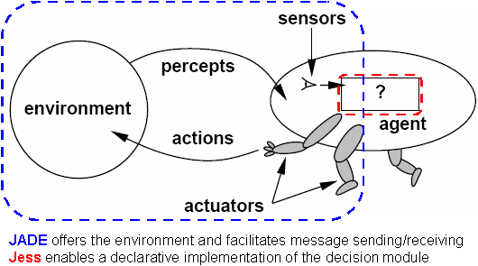

Author: Henrique Lopes Cardoso (University of Porto) - hlc@fe.up.pt
Date: March 2007
This brief tutorial explains how to integrate a Jess component into a JADE agent.
From the Jess homepage: «Jess is a rule engine and scripting environment written entirely in Sun's Java language by Ernest Friedman-Hill at Sandia National Laboratories in Livermore, CA. Using Jess, you can build Java software that has the capacity to "reason" using knowledge you supply in the form of declarative rules. Jess is small, light, and one of the fastest rule engines available.»
Jess was originally conceived as a tool for building expert systems. In the multi-agent systems world, it can be used as a decision component of an agent, which is implemented in a declarative way (see Figure 1).
Figure 1. An agent and its environment: JADE and Jess integration (adapted
from Russel & Norvig, "Artificial Intelligence: A Modern Approach", Prentice
Hall).

The rest of the tutorial is concerned with the implementation of a Jess decision module and its integration with the code of a JADE agent. This tutorial does not deal with why you should use Jess, does not describe in detail the functioning of the Jess engine, nor does it cover Jess installation issues. For this, read the Jess documentation.
This tutorial is based on JADE 3.4.1 and Jess 7.0p1, although it may be applicable to earlier versions of these tools.
Before integrating both tools, it is essential to keep in mind some of the main issues concerning the functioning of both JADE agents and Jess engines. Also, there are a number of different approaches that enable you to choose the amount of the agent program that you wish to implement in Jess.
First of all, it is worth remembering that, in principle, a JADE agent is single-threaded. This means that one must be careful if an agent ought to be able to interact with its environment while reasoning and making decisions. This is not Jess related, though. Whether or not you use Jess, this is an issue to take into account.
Being a rule engine, Jess includes a special class called Rete, which
implements the rule-based inference engine. To embed Jess in a Java application
(such as a JADE agent), you simply need to create a jess.Rete object and
manipulate it appropriately. Now, one of the methods included in this class that
allow you to run the inference engine is Rete.run(). This method will
make the engine consecutively fire applicable rules, and will return only when
there are no more rules to fire, that is, when the engine stops; therefore,
meanwhile the calling thread will be blocked. (If you want to understand how
rules are applied, take a look at Jess
documentation links.)
Now, if we block the calling thread, we block the entire single-threaded
agent. This may be relevant or not, depending on how long the rule-based
reasoning will take. Fortunately, the jess.Rete
class includes another run method that allows us to specify the maximum number of cycles
the engine should run. This will allow us to interleave the Jess-based reasoning
with other agent activities.
Taking into account the above considerations, the proposed implementation consists of embedding an instance of the Jess engine inside a behaviour. Since we want the agent to be able to continuously reason, we implement a CyclicBehaviour whose action will consist of running the Jess engine. However, we will be careful not to block other agent's behaviours for a considerable amount of time.
The following code snippet shows the implementation:
1 class JessBehaviour extends CyclicBehaviour {2 // the Jess engine3 private jess.Rete jess;4 // maximum number of passes that a run of Jess can execute before giving control to the agent5 private static final int MAX_JESS_PASSES = 1;67 JessBehaviour(Agent agent, String jessFile) {8 super(agent);9 // create a Jess engine10 jess = new jess.Rete();11 // load the Jess file12 try {13 // open the Jess file14 FileReader fr = new FileReader(jessFile);15 // create a parser for the file16 jess.Jesp j = new jess.Jesp(fr, jess);17 // parse the input file into the engine18 try {19 j.parse(false);20 } catch (jess.JessException je) {21 je.printStackTrace();22 }23 fr.close();24 } catch (IOException ioe) {25 System.err.println("Error loading Jess file - engine is empty");26 }27 }2829 public void action() {30 // to count the number of Jess passes31 int executedPasses = -1;32 // run jess33 try {34 // run a maximum number of steps35 executedPasses = jess.run(MAX_JESS_PASSES);36 } catch (JessException je) {37 je.printStackTrace();38 }39 // if the engine stopped, block this behaviour40 if(executedPasses < MAX_JESS_PASSES)41 block();42 // the behaviour shall be unblocked by a call to restart()43 }44.. ...64 } // end JessBehaviour class
The behaviour's constructor (lines 7-27) starts by creating an instance of a Jess engine (line 10), and then loads a previously created Jess code file, using a Jess parser (lines 16, 19). The behaviour execution (lines 29-43) runs the Jess engine indicating the maximum number of passes it should run (line 35). The run method employed returns the actual number of executed passes, which may be from zero up to the value of the argument. After running the engine, these numbers (the maximum and the actual executed passes) are compared (line 40) to determine if the engine stopped because there were no more rules to fire. If so, this behaviour is blocked (line 41), since a subsequent call to run (in the next round-robin behaviour execution) would have no effect at all.
This implementation assumes that you will have a way of asserting new
information into the Jess engine, and a way of restarting the JessBehaviour (see
comment at line 42). One way of doing this is by providing access to the
JessBehaviour class instance, and implementing appropriate methods that will be
responsible for both tasks (asserting information and waking). Here is an
example method for the JessBehaviour class:
45 boolean addFact(String jessFact) {46 // assert the fact into the Jess engine47 try {48 jess.assertString(jessFact);49 } catch(JessException je) {50 return false;51 }52 // if blocked, wake up!53 if(!isRunnable()) restart();54 // message asserted55 return true;56 }57
The method takes a Jess fact construct as an argument and asserts it into
Jess (line 48). (The assertString(String) method is one of the methods
available in jess.Rete
to make assertions.) The behaviour is then restarted if it was blocked (line 53).
This will have the effect of executing the behaviour (and running the Jess
engine) in the next round-robin opportunity. You might also want to consider
implementing methods that, instead of receiving directly the Jess fact as a
String, receive something else (e.g. an ACLMessage) and assemble the Jess code
themselves. This makes sense if you want to isolate Jess usage inside JessBehaviour.
One of those methods could be:
58 boolean newMsg(ACLMessage msg) {59 String jf = ... // use msg to assemble a Jess construct60 // "feed" Jess engine61 return addFact(jf);62 }63
Line 59 is where you would build the Jess construct to be asserted into Jess.
This construct would be a function of the ACLMessage parameter,
e.g. based on the message content.
A typical (although not mandatory) means of integrating this approach with the interacting facet of
an agent would be to implement behaviours that handle incoming messages and
that make use of JessBehaviour methods for asserting corresponding
facts into the Jess engine. Here is a snippet for an example message handling behaviour:
1 class MsgListening extends CyclicBehaviour {2 // a reference to the JessBehaviour instance3 private JessBehaviour jessBeh;45 MsgListening(Agent agent, JessBehaviour jessBeh) {6 super(agent);7 // save reference to the JessBehaviour instance8 this.jessBeh = jessBeh;9 }1011 public void action() {12 MessageTemplate mt = ... // some template13 ACLMessage msg = myAgent.receive(mt);14 if (msg != null) {15 // put into Jess engine16 if(jessBeh.newMsg(msg))17 ... // do something18 else19 ... // do something else20 } else21 block();22 }2324 } // end MsgListening class
The behaviour's constructor (lines 5-9) stores a reference to the
JessBehaviour instance (line 8). The behaviour execution (lines 11-22) gets an
incoming message (line 13) and adds it to the Jess engine by invoking an
appropriate method (line 16).
The integration of JADE and Jess can be done in a number of different ways (see the "Jess Application Design" section of the Jess manual for possible Jess and Java integrations). In this section a few options are highlighted.
Looking back at Figure 1, so far we have dealt with implementing part of the agent's program using Jess, and the provision of information coming from the agent's percepts (i.e., messages) to the Jess engine. Even in this part of the process, we could have a tighter integration of JADE and Jess by letting the Jess engine access the whole ACL message structure. There are two ways to do that.
One way is to define a Jess ACLMessage template that maps the ACLMessage
class. Something like:
(deftemplate ACLMessage(slot communicative-act)(slot sender)(multislot receiver)(slot content)(slot reply-with)(slot in-reply-to)...)
This way, we only need a method that translates an ACLMessage
object into a Jess construct for an ACLMessage fact. Jess rules
could then directly process these facts. Caution must be taken when converting
the content slot. This is because in an ACL message you can have a content as a
string including spaces, which will not qualify as a valid slot value in Jess
(see the Jess
language basics). A solution might be surrounding the content string with
double quotes ("), and escaping embedded quote symbols (\").
Another more interesting and simple approach would be to take advantage of the
Jess-Java integration, which allows Jess to access any Java object (read the
Jess manual on shadow facts for details). This way, we no longer need to
assemble, in Java, a Jess construct from an ACLMessage object. You
define an appropriate Jess template for the class:
(deftemplate ACLMessage(declare(from-class ACLMessage)))
You can add an ACLMessage object to the Jess engine working
memory by using Rete.add(ACLMessage), and
access
its beans directly inside Jess rules. Something like:
(defrule incomming-msg(ACLMessage (sender ?s))=>(printout t "Just received a message from " (?s getLocalName) crlf))
Unfortunately, ACLMessage objects that include a string content
(which will happen most of the times, since using content objects is not FIPA
compliant) misbehave when asserting them as shadow facts in Jess. I believe
this is due to the non-compliance of this class with the standard design patters
of JavaBeans used in
java.beans.Introspector (and through it in
Jess). The content parameter is defined as a StringBuffer, while
its getter/setter methods are implemented as returning/getting a String.
To solve this issue, you may have to implement an ACLMessageBeanInfo
class.
An alternative solution is to extend the ACLMessage class and
override the use of the content parameter. Something like:
public class MyACLMessage extends ACLMessage {private String content;MyACLMessage(int perf) {super(perf);}public String getContent() {return content;}public void setContent(String content) {this.content = content;}}
You then base your ACLMessage Jess template in the
MyACLMessage class (at from-class). You may, however, loose some of the functionality of the current ACLMessage
implementation. It might also be useful to add a constructor that takes an ACLMessage
as an argument, to be used when you want to assert the message into Jess (unless
all your agents use MyACLMessage).
The acting part of the process illustrated in Figure 1, where an action consists of sending a message, is discussed in this section.
The example included in the "Embedding
Jess in a Java Application" section of the Jess manual shows how to get the
results from the inference engine after it stops. A similar approach could be
implemented in the JessBehaviour.action() method: after
the Jess engine stops, a procedure for collecting specific types of facts that
represent the output of the reasoning process would be executed, and those facts
could then be used, e.g., to create a reply message. However, this would not
take advantage of a tighter integration with JADE.
Message sending can also be done from Jess itself. Again depending on the
intended level of integration, there are at least two ways of accomplishing this
task. One way is to make use of Jess user-functions. This feature enables you to
implement, in Java, a function that is to be invoked in your Jess code. You
could, therefore, implement a jess.Userfunction for allowing
message sending from Jess:
1 public class JessSend implements jess.Userfunction {2 private Agent myAgent;34 public JessSend(Agent a) {5 myAgent = a;6 }78 // Function name to be used in Jess9 public String getName() {10 return ("send");11 }1213 // Called when (send ...) is executed at Jess14 public Value call(ValueVector vv, Context context) throws JessException {15 // get function arguments16 ... vv.get(...17 ...1819 // prepare message to send20 ACLMessage msg = new ACLMessage(...);21 msg.set...22 ...2324 // send the message25 myAgent.send(msg);2627 return Funcall.TRUE;28 }2930 } // end JessSend class
And add this function to the Jess engine at the JessBehaviour
constructor:
jess.addUserfunction(new JessSend(myAgent));
Whenever Jess finds a (send ...) function call, it will use the
above JessSend.call(ValueVector, Context) method (lines 14-28). Inside it, and depending on
whatever information your implementation passes to the send
function, you get the function's arguments (lines 15-17) and use them somehow to
compose a message to send (lines 20-22). Depending on your choices from section
3.1, you could pass the send function a Jess ACLMessage
construct or even an ACLMessage object.
Another way of sending messages from Jess, with increasing JADE-Jess mixture,
is to grant it access to the Agent object, using Rete.add(Agent).
The Agent.send(ACLMessage) method is then directly
invokeable from Jess code.
Part of the code presented in this tutorial is based on the Jess example currently provided with JADE. Credits go to Fabio Bellifemine.